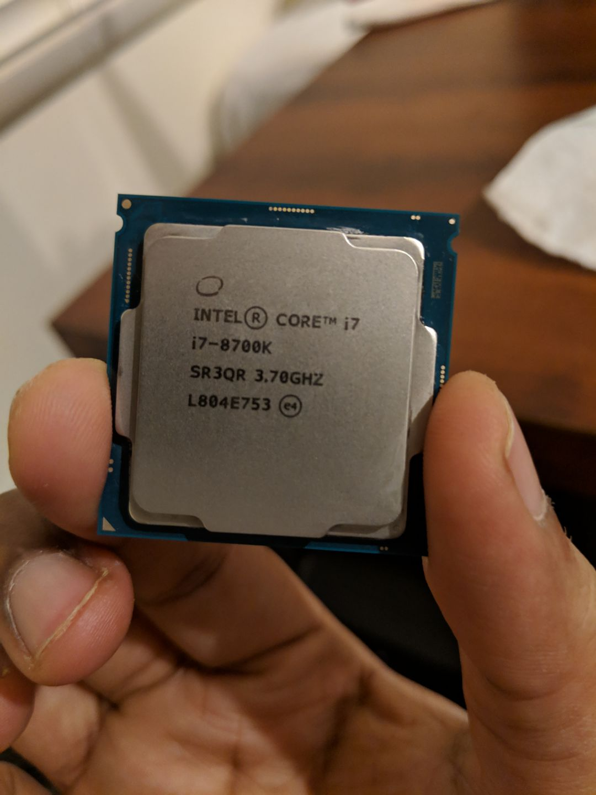
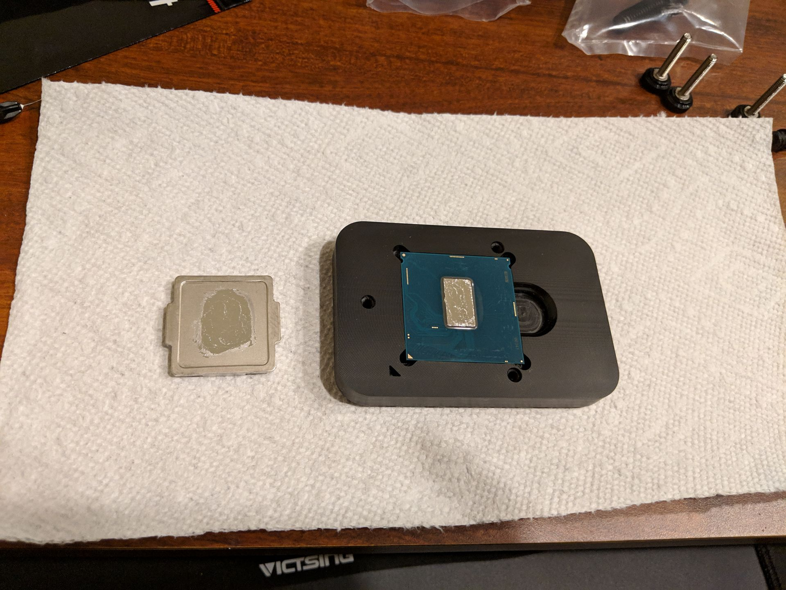
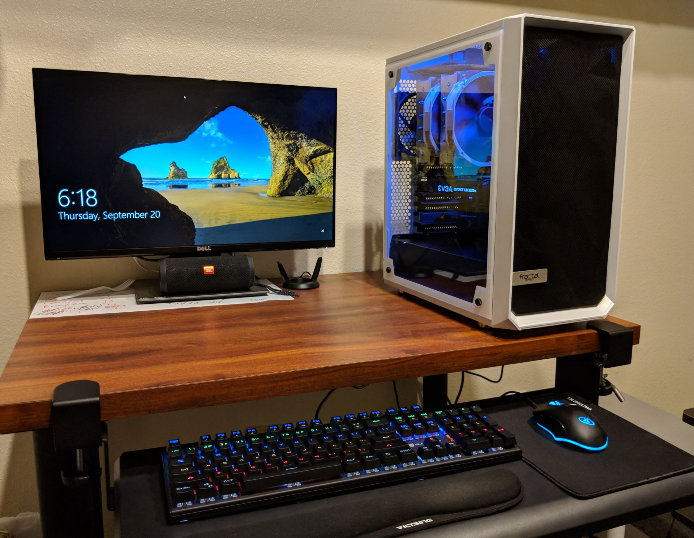
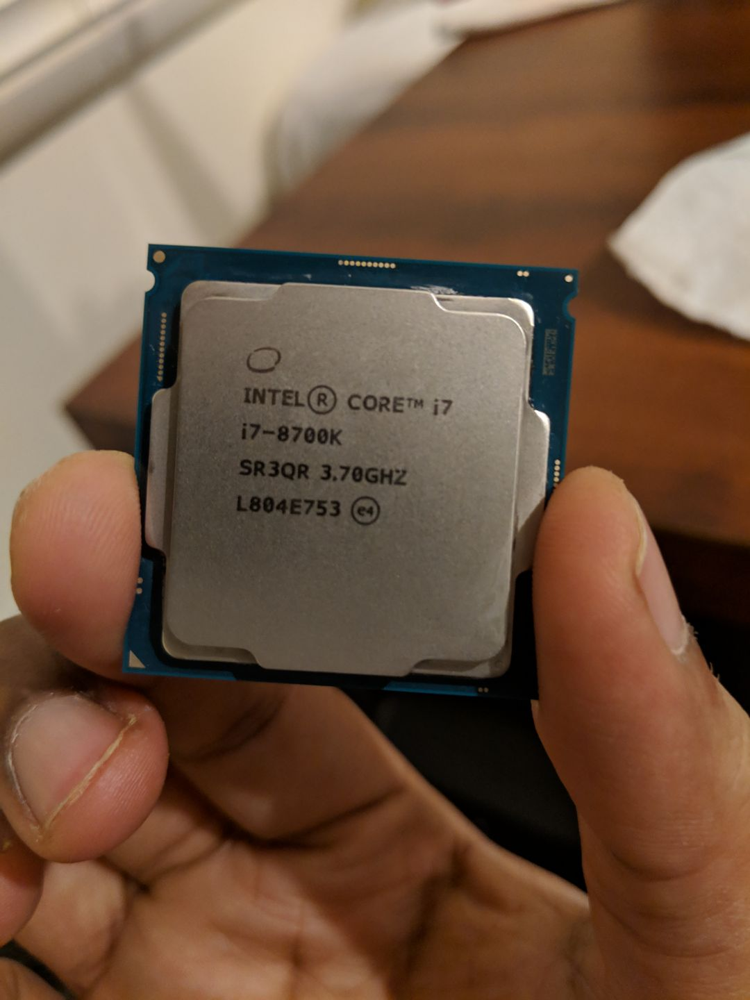
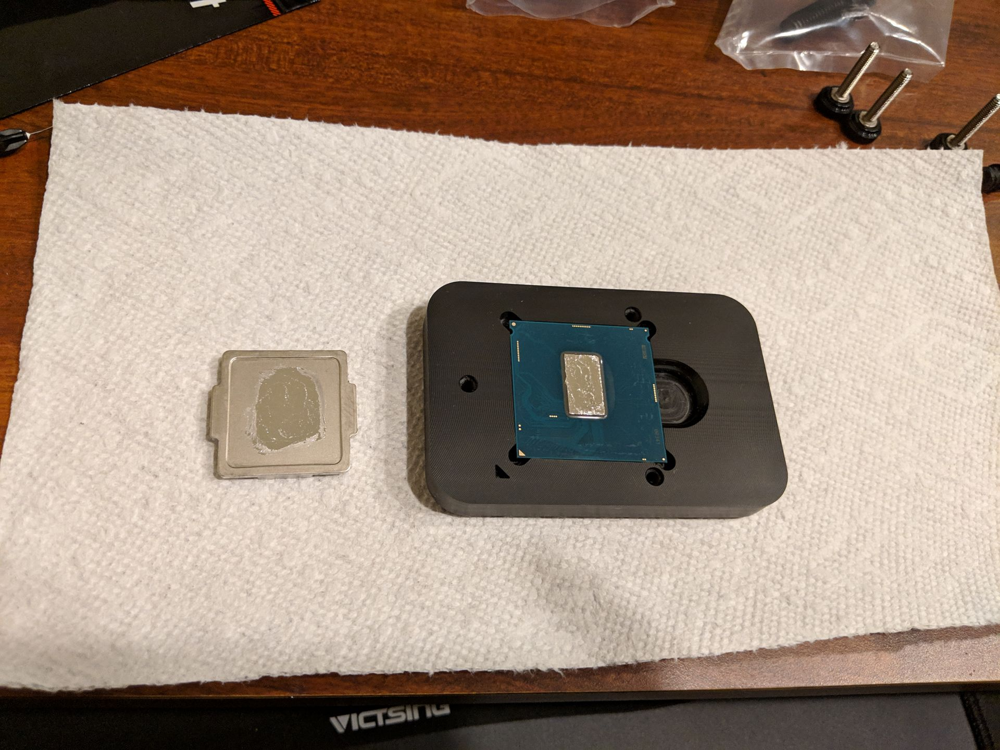
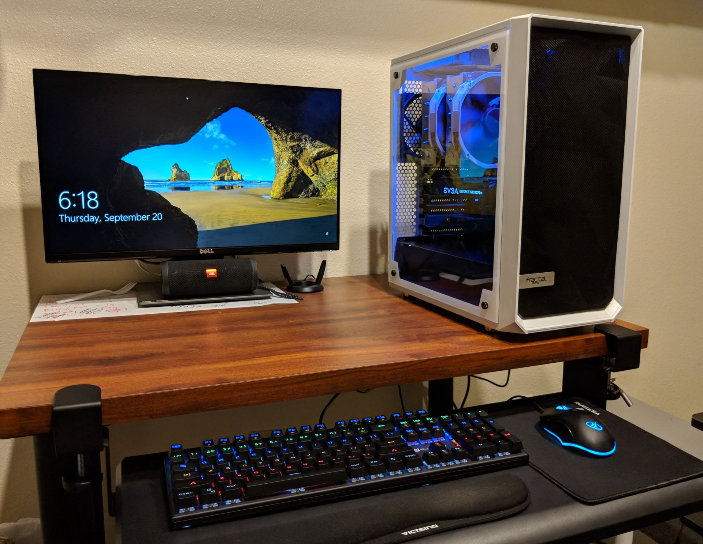
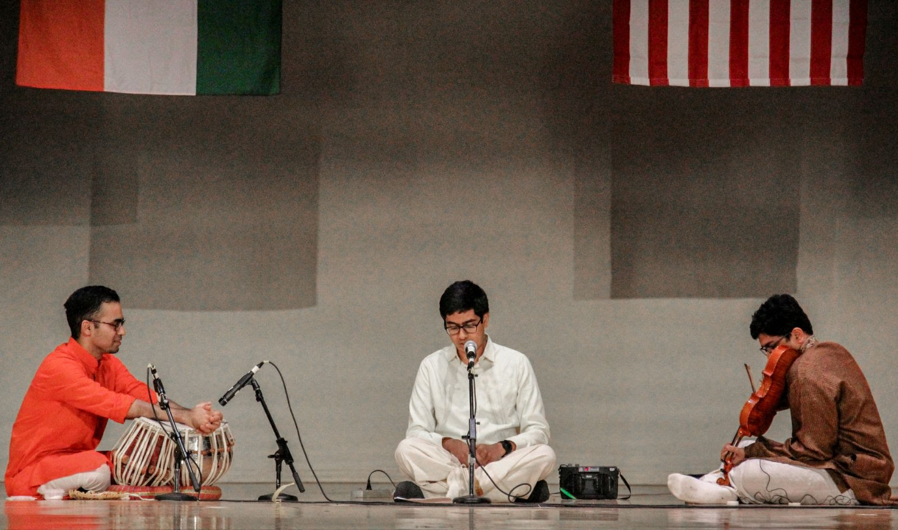
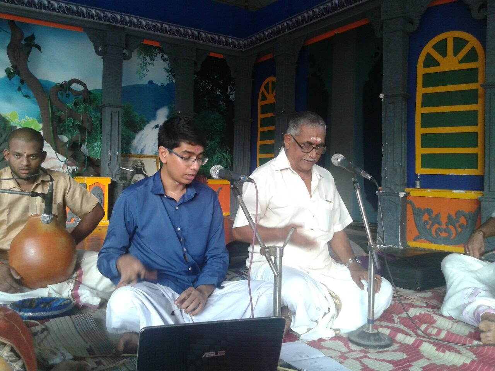
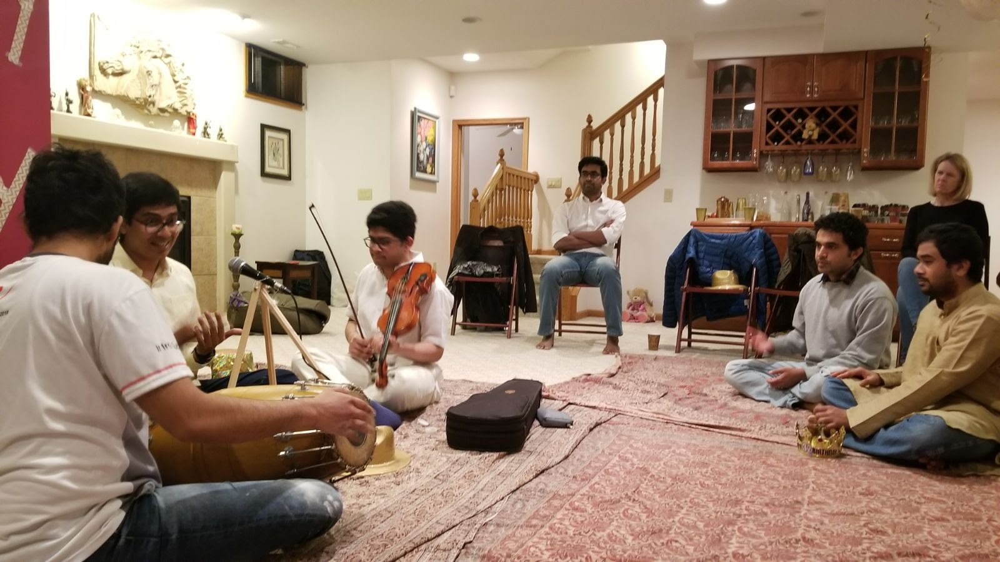

Android Apps
ScreenShift
A simple app to change screen resolution, density and overscan of Android devices. Requires root.EasyLock
Double tap status bar / nav bar / lockscreen to quickly put your device to sleep!SmartLockScreen
Smarter lock screen for pre-Lollipop Android devices.SMART
SMartphone Addiction Reduction ToolmyAutoNote
Easy note taking with auto-formatting!About
I'm a second year MS student in Computer Science at University of Illinois at Urbana-Champaign. I work in
the area of Human Computer Interaction with Ranjitha Kumar, in the Data Driven Design Group. I love all
things tech, and have a passion for Android development and PC building. I recently built a PC with Intel
Core i7 8700k on an Asrock Z370 Extreme4 motherboard, coupled with an EVGA GTX 1070Ti, inside a lovely and
efficient Fractal Design Meshify C White TG case. Additional daily drivers include a Pixel 2 XL, a Dell XPS
13 9370, and an iPad Pro 10.5.
I'm also a Carnatic music (classical music of South India) vocalist, and continue to learn, teach and
perform the art during my free time. Some pictures and videos are showcased in the next section. I'm also
interested in aviation and air crash investigation, playing badminton, video editing and cooking.
(click to enlarge)
 





Music
Gallery
(click to enlarge)


